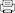

Sådan opdaterer du til professionelt regnskab.
På hovedmenuen vælger du punktet: [Sikkerhedskopi]
Højreklik på punktet [Gem sikkerhedskopi]
Her vælger du at gemme linkdestinationen. Teksten er forskellig, afhængig af hvilken internetbrowser du bruger det kan f.eks være.
Internet Explorer:
[Gem destination som]
Chrome/Firefox:
[Gem link som]
Opera:
[Gem linkdestination som]
Gem sikkerhedskopien et sted du kan huske., f.eks på skrivebordet.
Log nu ud af dit gratis regnskab og bestil et professionelt regnskab på
http://www.saldi.dk/bestilling
Aktiver dit nye regnskab, log ind og gør følgende:
På hovedmenuen vælger du punktet: [Sikkerhedskopi]
Klik på punktet [Indlæs sikkerhedskopi]
Afhængigt af
hvilken internetbrowser du bruger vælger du nu:
Internet Explorer:
[
Gennemse
]
Chrome/Firefox:
[Vælg fil]
Opera:
[Vælg datafil]
Udpeg din sikkerhedskopi.
Klik på [Indlæs]
Sig OK til at overskrive dit regnskab - der kommer 2 advarsler.
Når sikkerhedskopien er indlæst bliver du automatisk logget ud.
Du kan nu logge ind med samme brugernavn og adgangskode som du anvendte i dit gratis regnskab.
Er der noget som driller, så ring: +45 46902208.
Vi er klar til at hjælpe.
God fornøjelse...
Hilsen dit Saldi team.